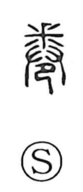

卷

Uncategorized
Kun: maku, maki | On: kan
to roll up ・ scroll ・ volume
Explanation
The original form 卷 combines 釆, 廾, and 巳 to picture an act of coiling: with 廾, two hands, one rolls up what 釆 suggests as a clawed hide or forepaw, bending it over into the curved shape evoked by 巳. From this concrete image comes the sense “to wind, roll up,” and by extension “to bend or turn.” Related characters echo facets of this motion: 捲 names the very act of rolling up; 眷 suggests turning back as if curling oneself; 惓 and 倦 portray the loosening of one’s stance when wearied. Because early writings were made into rolls bound in leather or silk, 書卷 came to mean a written work or book; even after paper codices became standard, the term 卷 (modern 巻) remained for numbering and dividing volumes.